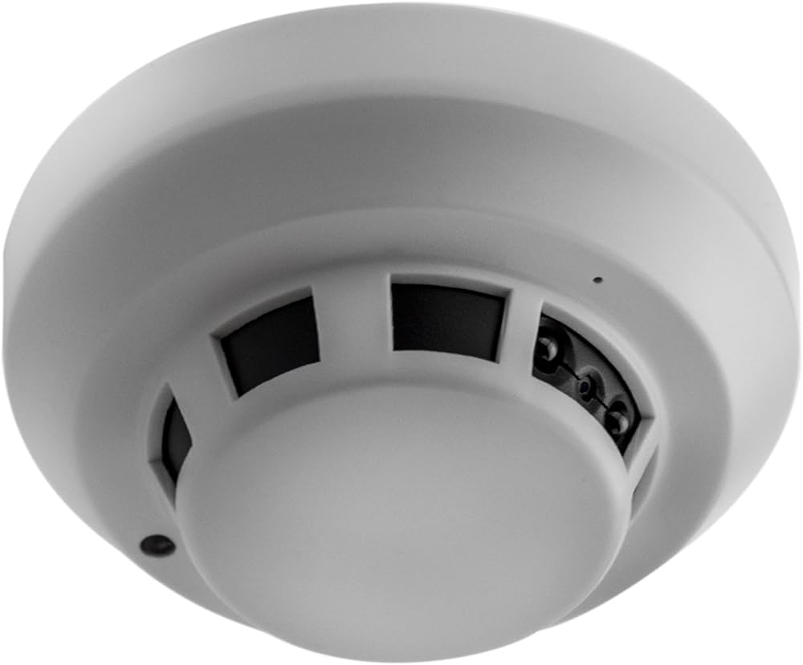
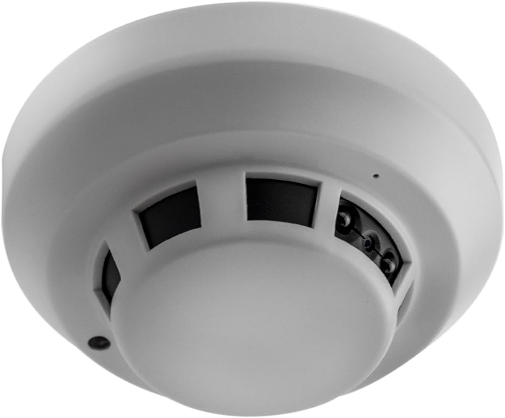

Optimaliseer uw beveiliging met onze geavanceerde infrarood dome camera's.
Deze innovatieve beveiligingsapparaten bieden uitgebreide surveillance dag en nacht, dankzij infraroodtechnologie voor heldere beelden in alle omstandigheden. Met moeiteloze en veelzijdige installatie, een 360-graden draaibare kop en geavanceerde zoommogelijkheden kunt u alle hoeken van uw eigendom bestrijken. Of het nu gaat om grote open ruimtes, parkeerterreinen of ingangen, onze camera's zorgen voor gedetailleerde bewakingsbeelden. De ingebouwde infraroodverlichting maakt nachtzicht mogelijk, waardoor de camera ook in het donker scherpe beelden vastlegt. Bovendien bieden onze camera's functies zoals bewegingsdetectie en op afstand bekijken via mobiele apparaten, voor totale bewaking en gemoedsrust. Bij VeiligHeid4all streven we naar hoogwaardige beveiligingsoplossingen. Kies voor veiligheid met onze infrarood dome camera's, ontworpen om uw veiligheid te waarborgen.
Prijzen
| Aantal | Prijs |
| 1x | 150€ |
| 2x | 289,99 € |
| 3x | 424,99 € |
| Bestellen? Bel of app 06 12 34 56 78! | |
Reviews
Review van Jan van der Pan
Voordelen:
- Deze infrarrood dome camera bied 360-graden zicht, hierdoor word er een groot gebied bestrijkt en heb je volledig overzicht
- Deze infrarooddomecamera is bestand tegen verschillende weersomstandigheden, waardoor ik ze binnen en buiten kon gebruiken
Nadelen:
- De infrarood verlichting van de camera heeft een beperkt bereik, dus het overzicht is breed en volledig alleen de afstand waarop beweging gedecteerd word is iets korter
Ik ben zeer tevreden over mijn infrarooddomecamera, alles wat ik nodig heb in 1. Het wat kortere bereik is voor mij geen probleem maar misschien wel iets om rekening mee te houden.
Jan van der Pan gaf onze infrarooddomecamera ★ ★ ★ ★ ★
Review van Pjeteri Fin
Voordelen:
- Deze infrarooddomecamera heeft een gestroomlijnd ontwerp en kan discreet worden gemonteerd, waardoor hij minder opvalt en de kans om gespot te worden door bijvoorbeeld indringers kleiner is
- De infrarooddomecamera heeft ingebouwde infraroodverlichting, waardoor er zelfs in het donker heldere beelden vastgelegd kunnen worden.
- Ook heeft deze camera een optie om alleen op te nemen als er activiteit wordt gedetecteerd, dit helpt om opslagruimte te besparen
Nadelen:
- Een nadeel is dat infrarood camera's beelden in zwart-wit of grijstinten vastleggen, waardoor er geen kleurendetails te zien zijn.
- Infraroodverlichting kan reflecteren op glas of andere reflecterende oppervlakken, waardoor de beeldkwaliteit kan verminderen.
Veel voordelen maar ook een paar minpuntjes dus!
Pjeteri Fin gaf onze infrarooddomecamera ★ ★ ★ ☆ ☆
Meer van ons:
 
